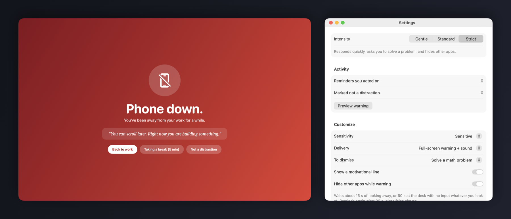

Doomore is a free, open-source Mac menu bar app that notices when you drift from your work to your phone, and gives you a push to come back. Everything runs on your Mac.

Start from the menu bar when you sit down. Nothing runs before that.
Doomore stays out of the way. Calls, videos and breaks are left alone.
Head down or turned, hands off the keys, mouse still, for long enough to matter.
A quiet nudge or a full-screen warning, depending on how strict you want it.
Start when you sit down. It never starts by itself.
Head, hands, keyboard and mouse, all together and sustained. Never one signal alone.
Gentle (quiet notification), Standard, and Strict (full-screen warning with a looping sound).
Wait 15 seconds, solve a math problem, type a commitment, or stand up and stretch before the warning lets go.
Pauses during video calls. Limit it to your work apps, take a 5 minute break, or pause.
Say “Not a distraction” three times in a row and it becomes one step less sensitive.
A free, open-source macOS menu bar app that detects when you look away from your work, for example to check your phone, and reminds you to get back to it. It runs entirely on your Mac.
No. Strict mode can hide other apps while the warning is up, but it never closes them, so no unsaved work is lost.
Not directly. It infers distraction from head position, hands in view, and keyboard and mouse idle time, so it can miss a phone held level at eye height.
Yes. Doomore is MIT licensed and the source is on GitHub.
Apple silicon Macs running macOS 14 or later. It has so far been tested only on macOS 27.